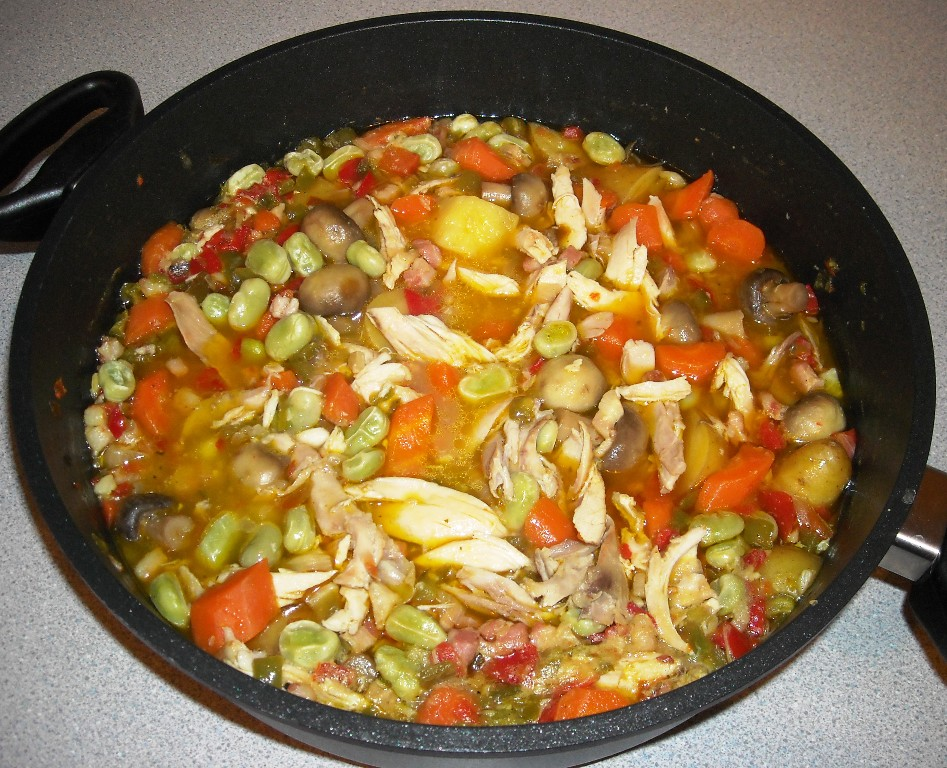

One Pot Chicken and Vegetables

In this one pot chicken and vegetables, chicken thighs cook with mushrooms and frozen mixed vegetables in a delicious sauce, seasoned with Italian herbs.
Ingredients
- 3/4 teaspoon salt
- 3/4 cup flour
- 1kg boneless chicken thights
- 2 tablespoons unsalted butter
- 1 1/2 teaspoons Italian herb seasoning
- 1 cup chopped onion
- 3 cups frozen mixed vegetables
Steps
- Add flour, salt, pepper, and Italian herb seasoning to a large resealable plastic bag and mix well. Add chicken pieces to seasoned flour, seal the bag, and shake, lightly coating chicken.
- Melt butter in a large, deep skillet or Dutch oven over medium-high heat. When butter stops sizzling, add chicken and brown on each side, 3 to 5 minutes per side. Brown in batches, if necessary, so the skillet won’t be too crowded. Remove chicken to a plate and keep warm.
- Turn the heat down to medium, and use a wooden spoon to loosen any browned bits so they will not burn. Add olive oil. When oil is hot, add onions, celery, and mushrooms; cook and stir for about 3 minutes. Add garlic and cook about 30 seconds more. Pour in chicken broth and stir.
- Move vegetables to one side of the pot and return half the chicken to the pot. Cover with vegetables and repeat for remaining chicken on the other side of the pot. Bring to a boil, cover, reduce heat, and allow to simmer about 20 minutes.
- Add frozen mixed vegetables. Use a spoon to press vegetables down into the cooking liquid, replace the cover, and cook until vegetables are tender, about 10 minutes.
- Pour into a serving dish, garnish with fresh parsley, and serve warm.
Home